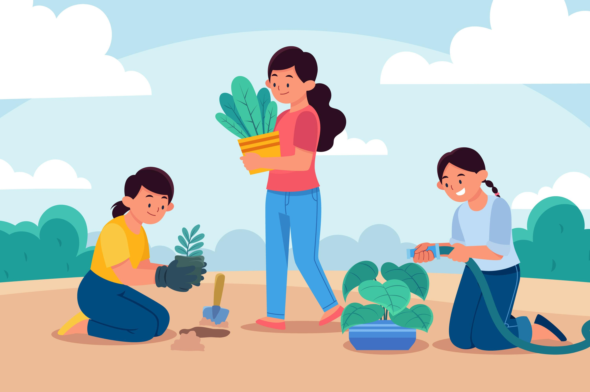

Gerakan Bersih Pantai Pemuda Peduli Lingkungan
Gerakan Bersih Pantai Pemuda Peduli LingkunganKegiatan Menanam dan Merawat Pemuda Peduli Lingkangan
KUMPUL - Selain sebagai sumber oksigen, pohon juga menjadi penyejuk di saat Matahari bersinar dengan teriknya. Pohon juga memiliki manfaat dari berbagai sisi. Karena memiliki banyak manfaat, maka penting bagi kita untuk menanam pohon.
Mengingat keadaaan bumi yang "kritis" Komunitas Pemuda Peduli sadar akan hal itu. Hal inilah yang menjadi dasar semangat para anggota untuk terus melakukan Kegiatan Menanam dan Merawat. Selain di sekitar Markas Besar Komunitas Pemuda Peduli, kami juga melakukan kegiatan ini di sekolah sekolah. Dengan tujuan untuk mengedukasi kalangan dini.
Tujuan dari kegiatan ini adalah untuk turut andil dalam peran menjaga bumi. Supaya kelak anak cucu kita tetap bisa merasakan sejuknya oksigen.